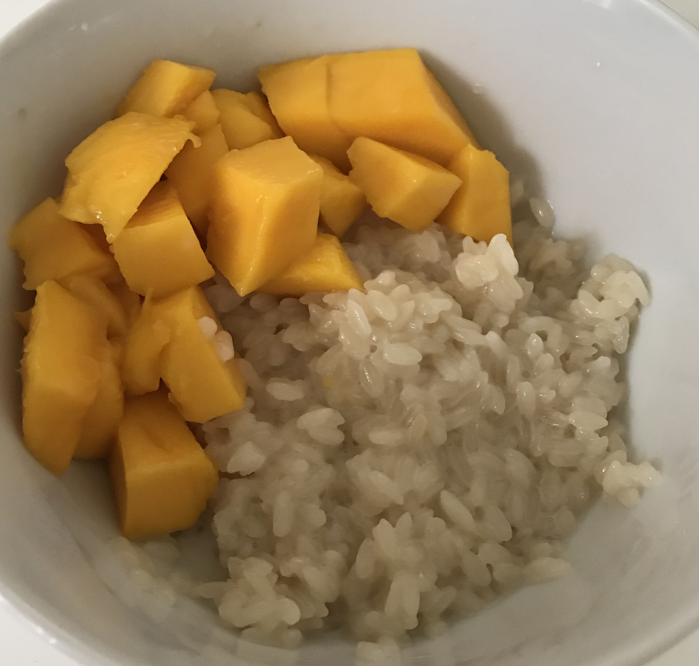

Mango Sticky Rice

This is a recipe that Jeff learned while on a trip in Thailand.
If you haven't had this before, you have to try it! Coconut and mango
are just classic Thai flavors that go perfectly together.
Ingredients
3/4 tbsp palm or brown sugar
Instructions
Soak the sticky rice in water for 3/4 hours before cooking.
Heat coconut cream over medium heat, add sugar, salt.
Remove from heat and add sticky rice, mix and cover for 15 minutes.
Sauce: Mix coconut cream with rice flour and over low heat, boil until
the mixture thickens, remove from heat.
Place sticky rice on one side of serving dish and the sliced mango on
the other side of the serving dish, cover the sticky rice with the sauce.